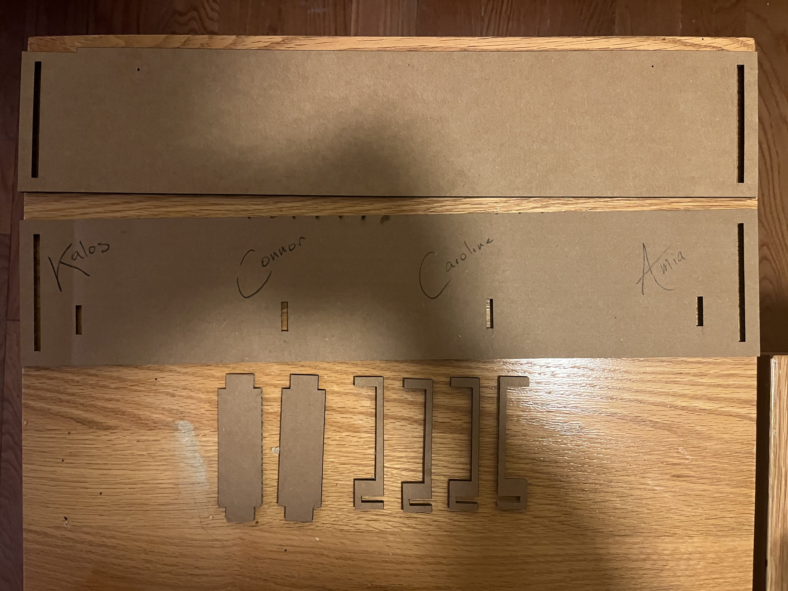

/week two: press fit kit
# fusion 360 tutorial
# ---------------------------------
i worked through this tutorial; here is what I produced:
# 3d modeling assembly
# ---------------------------------
i decided to create a 3d model of my phone and phone case, in case i might ever in the future want to design/print an accessory for it.
i began by measuring the dimensions of my phone with calipers, creating a sketch, and then extruding the sketch.
unfortunately, i couldn't figure out how to properly measure the corner radius, so i looked for the blueprints of my phone online and used the fillet function to bring the corners in.
i then created the extruded camera platform, as well as the camera lenses. i referred again to the blueprints to position the centers of the lenses.
i then created the lock button, the volume up and down buttons, and reverse extruded a hole for the volume silence switch
# press fit kit
# ---------------------------------
as i hope will be the case for everything i produce in this class, i wanted to make a press fit kit that would have a practical use. inspired by the countless masks strewn about my common room, i decided to make a wall-mounted mask hanger.
my preliminary design consisted of a wall-mounted back plate with a series of hooks extruding from it.
i did, however, want to make the hooks attach as securely as possible, so i decided to opt for them to hook onto the back of the front place. this necessitated, then, a separate back plate that would able to be flush with the wall, and then two side pieces that could attach the front and back plates.
i laser cut this design on cardboard and assembled it
unfortunately, the assembly was a little loose. after mounting it on the wall, the front plate continued to fall off unless secured with tape — which was obviously cosmetically unideal.
so i made a few adjustments — remeasuring the width and tightening the gap slightly. i also changed the side pieces to two separate connecting joints, so as to better connect the front and back plates.
i also added an additional interchangeable hook design.
i laser cut these onto wood, and assembled them (adding an engraving of my roommates initials). here is the final product: